作者：创世魂
● 概述
本组件主要提供月历显示功能。
● 不圈注今天(写)
帮助文档如下图：
本属性设置为真，可以设置当前组件不进行圈注今天。
注：本属性只能在属性栏设置。
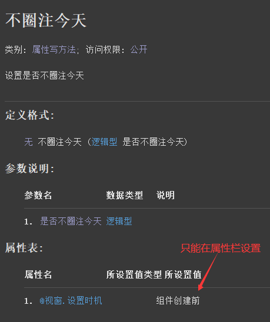
代码编写如下图：
直接在当前组件属性栏设置本属性为真。
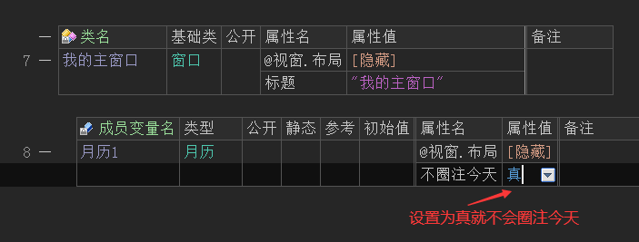
运行效果如下图：
当前属性设置为真后，可以看到月历组件中不会圈注今天日期。
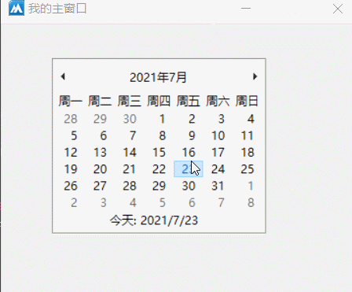
当属性值设置为假后，今天日期始终会被圈注。
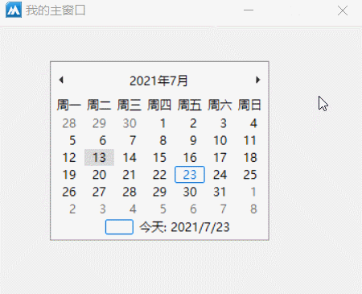
● 不显示今天(写)
帮助文档如下图：
当本属性设置为真，可以隐藏今天日期的显示。
注：本属性只能在属性栏设置。
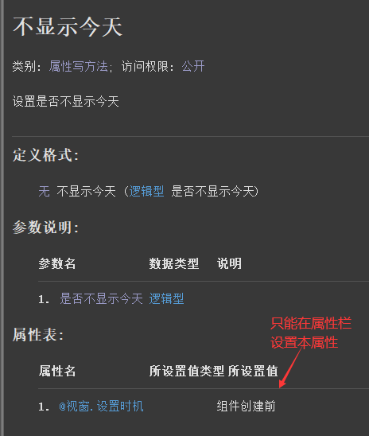
界面操作预览：
打开界面设计器，设置本属性值为真，可以看到月历组件的今天日期被隐藏。
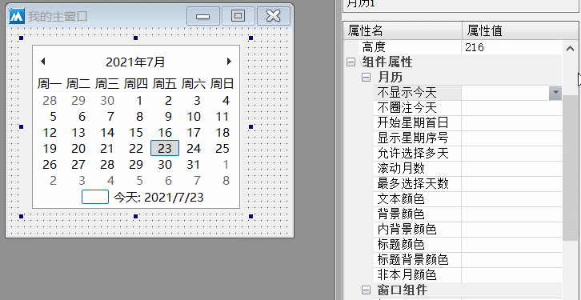
运行效果如下图：
最终软件运行后，自然也不会显示今天日期。
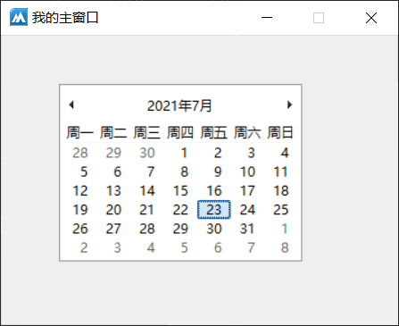
● 今天(写)
帮助文档如下图：
通过本属性可以设置月历组件当前选中日期，单位是小数日期，并非时间戳。
注意：本属性不是修改月历日期，而是选中指定日期。
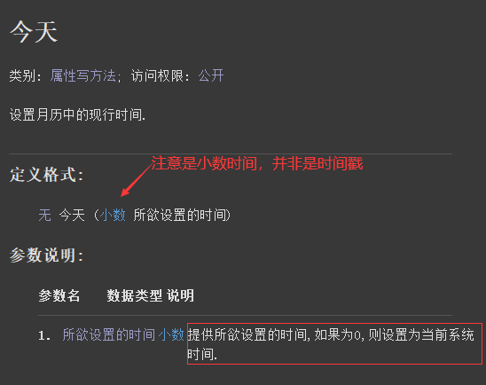
代码编写如下图：
1、利用“增减时间()”方法，计算3天后的日期。
2、将计算后的日期赋值给当前属性。
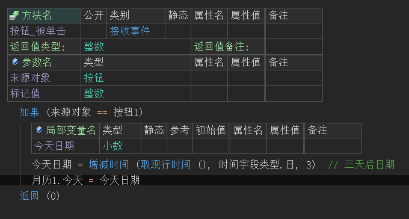
运行效果如下图：
最终按钮点击后，月历组件会选中3天后的日期。
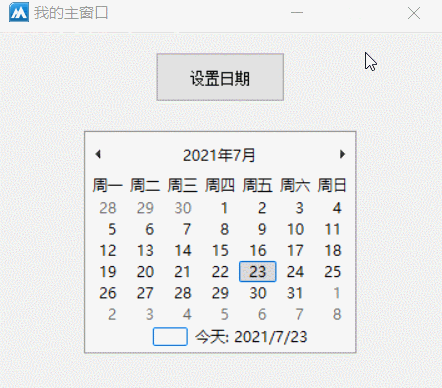
● 开始星期首日(写)
帮助文档如下图：
通过本属性可以设置当前组件的首日为星期几。
属性值调用方式为“星期类.XXX”。
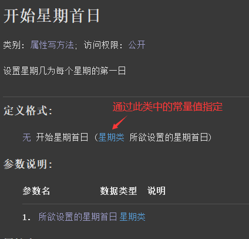
代码编写如下图：
按钮点击后设置本属性值为“星期类.星期日”。
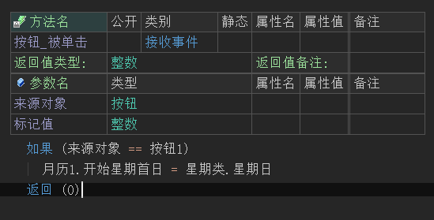
运行效果如下图：
最终可看到首日由周一变成了周日。
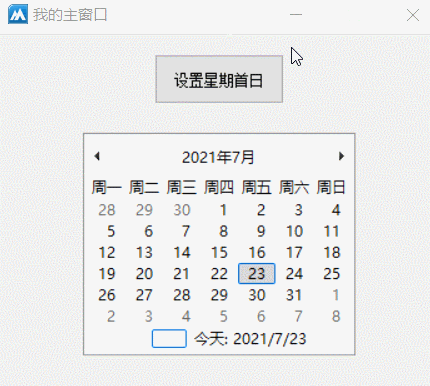
● 显示星期序号(写)
帮助文档如下图：
本属性设置为真，可以在每周的开始位置显示当前周是在当前年中是第多少周。
注意：本属性必须在属性表中调用，不支持动态设置。
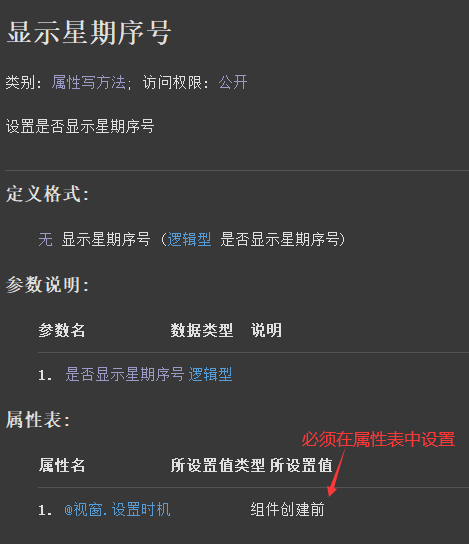
代码编写如下图：
在属性表中调用本属性设置为真。
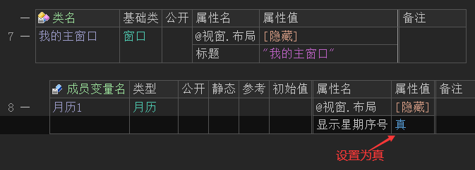
运行效果如下图：
最终星期序号会显示出来。
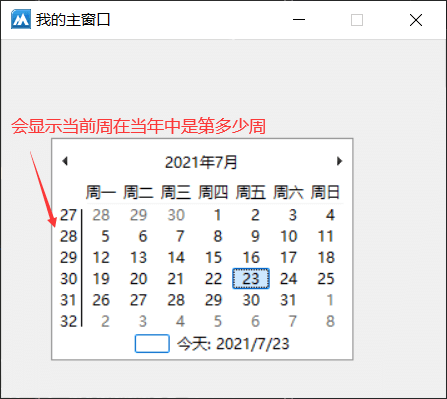
● 最大日期(写)
帮助文档如下图：
通过本属性可以设置当前可显示的最大日期，属性值为0则无限制。
注意：需要提供小数时间，并非时间戳。
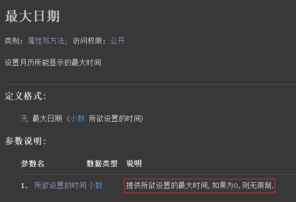
代码编写如下图：
1、首先利用“增减时间()”计算一个最大日期。
2、然后将计算出来的日期赋值给本属性即可。
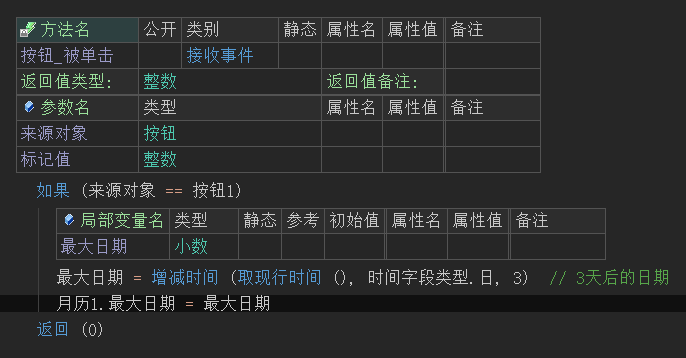
运行效果如下图：
最终可以看到当前月历组件的最大日期停留在了三天后。
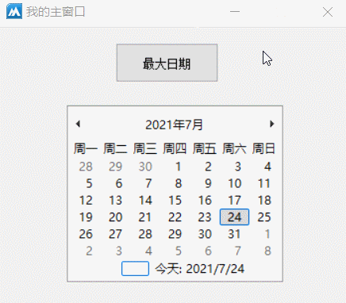
● 最小日期(写)
帮助文档如下图：
通过本属性值可以设置当前月历可显示的最小日期，属性值为0则无限制。
注意：需要提供小数时间，并非时间戳。
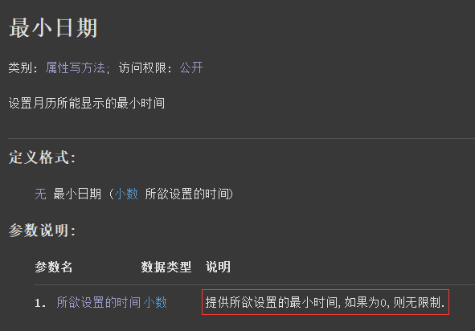
代码编写如下图：
1、首先利用“增减时间()”计算一个最小日期。
2、然后将计算出来的日期赋值给本属性即可。
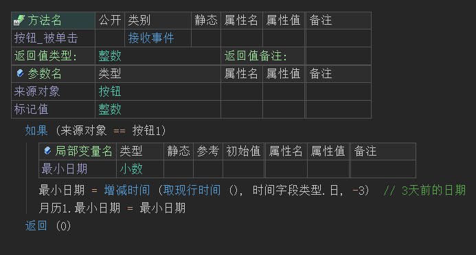
运行效果如下图：
最终可以看到当前月历组件的最大日期停留在了三天前。
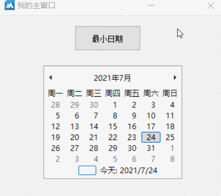
● 滚动月数(写)
帮助文档如下图：
通过本属性可以设置当进行切换月份操作时，一次性跳过的月的数量。
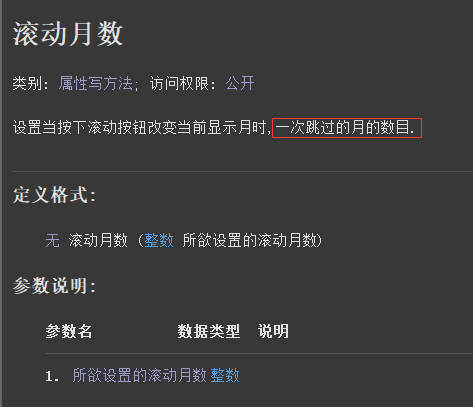
代码编写如下图：
按钮点击后设置本属性值为3.
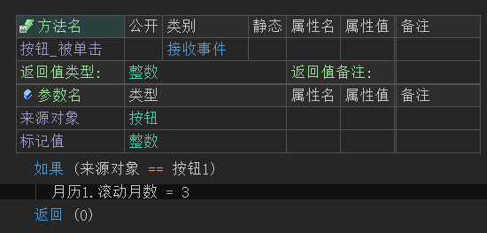
运行效果如下图：
最终按钮点击后，切换月份时会一次性跳过三个月。
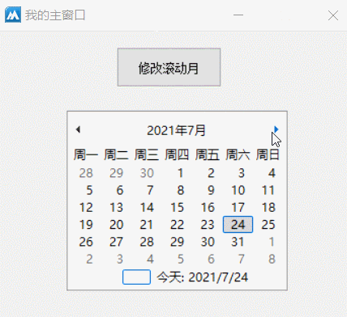
● 置日期范围
帮助文档如下图：
通过本方法可以同时设置最大和最小显示日期。
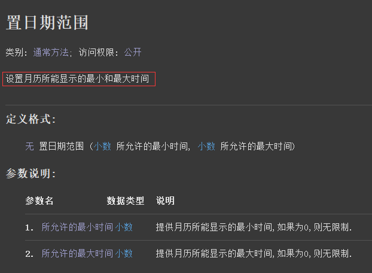
代码编写如下图：
1、利用“增减时间()”方法，计算一个最大日期和最小日期出来。
2、将计算出来的日期填入本方法的参数中即可。
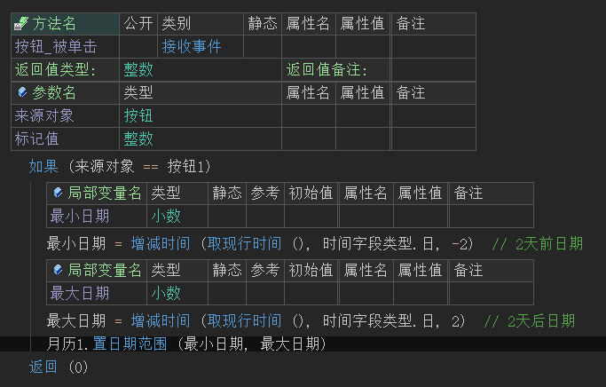
运行效果如下图：
最终可以看到月历组件的最大和最小显示日期被限制在了5天。
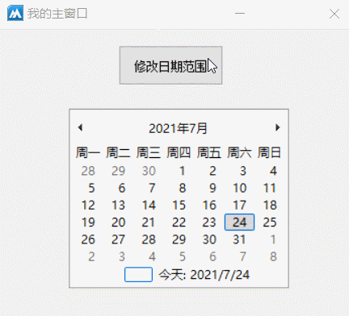
● 选择日期被改变(事件)
帮助文档如下图：
当日期被选择时会触发本事件，可通过“首选择日”或“尾选择日”属性获取当前选择日期。
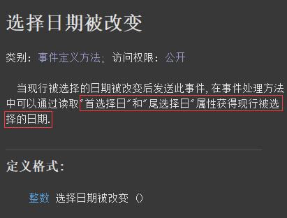
代码编写如下图：
添加本事件后，利用“时间到文本()”转换后显示在标签上。
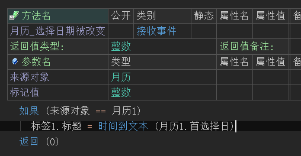
运行效果如下图：
最终可以看到当日期选择时，标签会实时显示当前选择的时间。
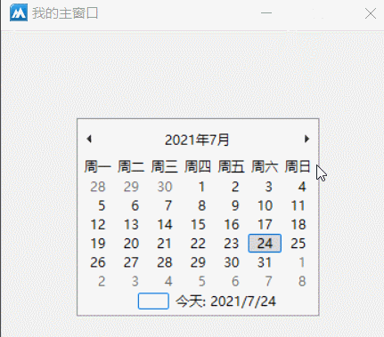